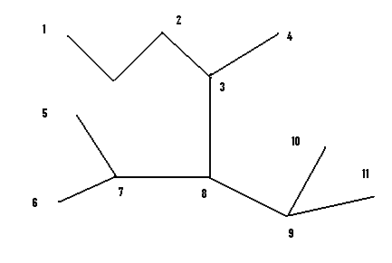
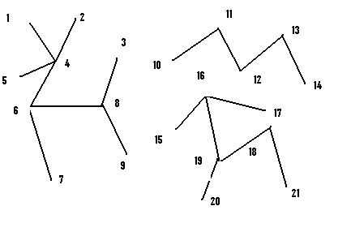

Noţiunea de arbore
În clasa grafurilor conexe, arborii reprezintă grafurile cele mai simple (ca structură) şi, deasemenea, cele mai frecvent utilizate în practică. De studiul lor s-au ocupat matematicieni şi fizicieni de seamă. Termenul de arbore a fost introdus de Cayley în 1857, plecând de la o analogie botanică.

Definiţie: Se numeşte arbore un graf neorientat, conex şi fără cicluri.
În figura alăturată este desenat un arbore. Se observă că oricum am elimina o muchie, graful îşi pierde proprietatea de conexitate, şi oriunde am adăuga o muchie, apare un ciclu. Acest lucru este valabil în orice arbore.
Teoremă: Fie un graf neorientat G=(X,U). Următoarele afirmaţii sunt echivalente:
1) G este un arbore
2) G este un graf conex, minimal cu această proprietate (eliminând o muchie oarecare se obţine un graf neconex)
3) G este un graf fără cicluri, maximal cu această proprietate (dacă se adaugă o muchie se obţine un graf care are măcar un ciclu)
Definiţie: Fie graful G=(X,U) cu n≥2 noduri, m muchii şi p componente conexe. Numărul ν(G)=m-n+p se numeşte numărul ciclomatic al grafului G.
Observaţii:
- se poate arăta că ν(G) furnizează numărul de cicluri care se pot alcătui într-un graf
- numărul ν(G) reprezintă numărul de muchii ce trebuie înlăturate din graf astfel încât acesta să nu conţină cicluri
Definiţie: Fie G un graf neorientat. Un graf parţial H al lui G, cu proprietatea că H este arbore, se numeşte arbore parţial al lui G.
Corolar: Un graf neorientat G conţine un arbore parţial dacă şi numai dacă G este conex.
Propoziţii:
1) Un arbore cu n≥2 vârfuri conţine cel puţin două vârfuri terminale.
2) Orice arbore cu n vârfuri are n-1 muchii.
3) Un graf G cu n vârfuri şi m muchii este arbore dacă este aciclic şi m=n-1.
4) Un graf G cu n vârfuri şi m muchii este arbore dacă este conex şi m=n-1.
5) Un graf cu n vârfuri şi cel puţin n muchii conţine cel puţin un ciclu.
6) Numerele d1≥d2≥d3≥...≥dn≥1 sunt gradele nodurilor unui arbore cu n≥2 noduri dacă şi numai dacă d1+d2+...+dn=2(n-1).
Definiţie: Un graf neorientat care nu conţine cicluri se numeşte pădure.
Denumirea se justifică prin faptul că fiecare componentă conexă a unui graf pădure este un arbor

Arbore parţial de cost minim
În practică se întâlnesc foarte des probleme de tipul următor: se doreşte conectarea unor consumatori la o sursă de energie electrică astfel încât costul branşării să fie minim. Transpunând problema în termenii teoriei grafurilor, se cere de fapt determinarea unui arbore parţial de cost minim, adică un arbore care are proprietatea că suma costurilor muchiilor sale să fie minimă.
Definiţie: Suma costurilor muchiilor unui graf se numeşte costul grafului. Dacă se defineşte funcţia c:U→R+ care asociază fiecărei muchii un număr real numit cost, costul grafului este:
c(G)=∑u∈Uc(u)
Funcţia c se numeşte funcţia cost.
Fie G=(X,U) un graf conex, reprezentat prin matricea costurilor. Se ştie că prin eliminarea uneia sau a mai multor muchii se obţine un graf parţial. Dacă graful parţial al unui graf G conex este arbore, acesta se numeşte arbore parţial al lui G. Dacă dintr-un graf conex G=(X,U) se elimină muchii astfel încât să se obţină un arbore parţial al cărui cost să fie minim, acesta se numeşte arbore parţial de cost minim.
Proprietate: Pentru graful G conex, cu funcţia de cost c, există un graf parţial H conex şi de cost minim, care este şi arbore.
Pentru un arbore parţial de cost minim folosim notaţia prescurtată de APM. Pentru determinarea APM sunt cunoscuţi mai mulţi algoritmi, cei mai utilizaţi fiind algoritmul lui Kruskal (1956) şi algoritmul lui Prim, ambii bazaţi pe o strategie Greedy.
Arbori binari
Structurile arborescente reprezintă structuri neliniare de date cu multe aplicaţii în programarea şi utilizarea calculatoarelor.
Definiţie: Se numeşte arborescenţă un arbore care are un vârf special numit rădăcină iar celelalte noduri pot fi repartizate în m mulţimi disjuncte X1, X2,...,Xm, m≥0, astfel încât în fiecare din aceste mulţimi există un nod adiacent cu rădăcina, iar subgrafurile generate de acestea sunt la rândul lor arborescenţe.
În particular, o arborescenţă cu un singur nod este formată doar din nodul rădăcină. Dacă ordinea relativă a arborescenţelor generate de mulţimile X1,X2,...,Xm din definţie are importanţă, arborescenţa se numeşte arbore ordonat.

În reprezentarea grafică a unei arborescenţe nodurile se desenează pe nivele, astfel: rădăcina se află pe primul nivel, vârfurile adiacente cu rădăcina pe următorul nivel, etc.
Nodurile adiacente cu rădăcina se numesc descendenţii rădăcinii. Conceptul se aplică analog pentru nodurile de pe un alt nivel. Descendenţii aceluiaşi nod se numesc fraţi. Dacă nodul x este descendentul unui nod y, îl numim pe acesta din urmă părintele nodului x.
Definiţie: Un arbore binar este o mulţime finită de noduri care este fie vidă, fie reprezintă un arbore ordonat în care fiecare nod are cel mult doi descendenţi.
Un arbore binar conţine cel mult doi subarbori, pe care îi numim subarbore stâng, respectiv subarbore drept. Ei se pot obţine prin suprimarea rădăcinii şi a nodurilor incidente cu aceasta. Un nod fără descendenţi se numeşte nod terminal sau frunză.
Un arbore binar în care fiecare nod are 0 sau 2 descendenţi se numeşte arbore binar complet. În exemplele de mai sus, arborele din dreapta este un arbore binar complet.
Propoziţie: Un arbore binar complet care are n noduri terminale, toate situate pe acelaşi nivel, are în total 2n-1 noduri. În consecinţă, un arbore binar complet are un număr impar de noduri.
Reprezentarea arborilor binari
Există mai multe posibilităţi de reprezentare a arborilor binari. În continuare sunt descrise trei metode des utilizate
Reprezentarea standard
Reprezentarea standard se bazează pe următorul principiu: pentru fiecare nod în parte se precizează, dacă există, descendentul stâng şi descendentul drept. Dacă un nod este terminal, atunci acest lucru se precizează punând 0 în locul descendenţilor săi. Pentru aceast se utilizează fie doi vectori numiţi, de exemplu, S-pentru descendenţii din stânga şi D-pentru descendenţii din dreapa, fie alocarea dinamică. Dacă pentru reprezentarea unui arbore binar cu n noduri se folosesc vectorii S şi D, atunci pentru fiecare nod i∈{1,2,....n} componenta S[i] conţine descendentul stâng al nodului i, iar componenta D[i] conţine descendentul drept al nodului i.
De exemplu, pentru arborele din figura alăturată, cei doi vectori vor avea următoarea structură:
| Nodul i |
1 |
2 |
3 |
4 |
5 |
6 |
7 |
8 |
9 |
| S[i] |
2 |
4 |
0 |
0 |
6 |
0 |
8 |
0 |
0 |
| D[i] |
3 |
5 |
0 |
0 |
7 |
0 |
9 |
0 |
0 |
Se observă că nu este important să se precizeze rădăcina, deoarece ea nu este descendenta nici unui nod.
Vectorul de taţi
Se folosesc doi vectori: TATA şi DESC. Pentru fiecare nod i, TATA[i] precezează care nod îi este ascendent (nodul părinte). DESC[i] poate lua două valori: -1 dacă i este descendent stâng pentru TATA[i] şi 1 dacă este descendent drept pentru acesta. Pentru nodul rădăcină, care nu are un nod părinte asociat, valoarea corespunzătoare în cei doi vectori este 0.
Pentru arborele binar de mai sus, configuraţia celor doi vectori este:
| Nodul i |
1 |
2 |
3 |
4 |
5 |
6 |
7 |
8 |
9 |
| TATA[i] |
0 |
1 |
1 |
2 |
2 |
5 |
5 |
7 |
7 |
| DESC[i] |
0 |
-1 |
1 |
-1 |
1 |
-1 |
1 |
-1 |
1 |
Reprezentarea cu paranteze
Reprezentarea cu paranteze (parantezată). Pentru a obţine o reprezentare a arborelui folosind paranteze, se procedează în felul următor:
1) se scrie nodul rădăcină
2) fiecare nod al arborelui va fi urmat de:
- paranteză rotundă deschisă
- descendent stâng
- virgulă
- descendent drept
- paranteză rotundă închisă
Pentru arborele din figura anterioară, reprezentarea parantezată este: 1( 2 (4 , 5 ( 6 , 7 ( 8 , 9 ) ) ) , 3).